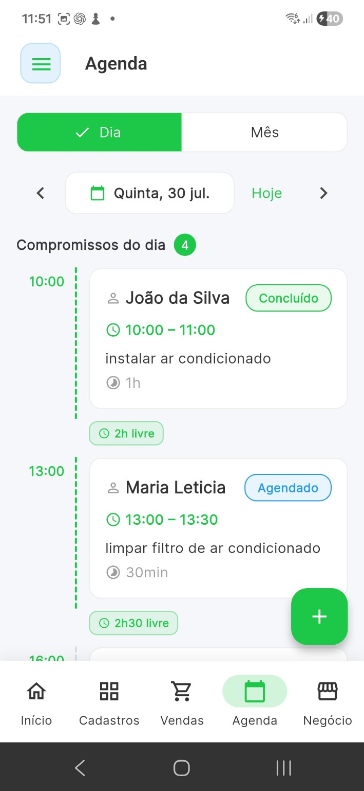
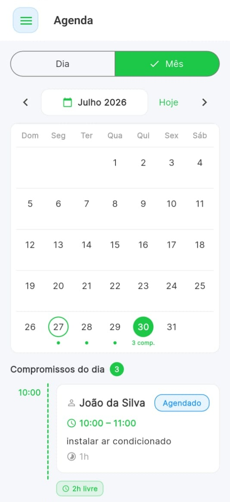

Eletricistas e encanadores
Organize visitas, avaliações e serviços agendados.
Cadastre compromissos, acompanhe sua rotina por dia ou mês e conecte a agenda ao fluxo de orçamentos do Valeu.


Mantenha os compromissos do trabalho no mesmo aplicativo usado para clientes, orçamentos e vendas.
Use a visão de mês para enxergar a distribuição dos compromissos e navegar pela agenda com mais contexto.


A agenda faz parte do fluxo do Valeu e pode servir de ponto de partida para continuar o atendimento com um orçamento.
Organize visitas, avaliações e serviços agendados.
Troque anotações soltas por uma agenda ligada à operação.
Centralize compromissos, clientes, orçamentos e vendas no mesmo aplicativo.
Sim. O Valeu oferece visualizações para acompanhar compromissos do dia e também uma visão mensal.
Sim. A agenda está conectada ao fluxo de orçamento do Valeu para facilitar a continuidade do atendimento.
Sim. Ela foi pensada para profissionais que precisam organizar visitas, serviços, avaliações e outros compromissos do dia a dia.
Organize compromissos e conecte sua rotina aos orçamentos, clientes e vendas do Valeu.